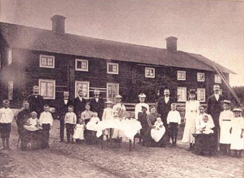

Storbyggningen, Brattfors
av Kjell Söderström

Storbyggningen byggdes i början av 1800-talet och
bestod av fyra lägenheter på nedre planet med två
ingångar, en på vardera långsidan samt stor vind en
trappa upp.
Varje lägenhet bestod av ett rum och kök.
Byggnaden var ca 24 meter lång.
Byggnaden revs år 1949. År 2001 var jag och Ture Persson
(Ture var med och rev byggnaden) och undersökte platsen
och fann rester av en av skorstenarna.
På grund av tät vegetation och stora träd så inhämtades
tillstånd från markägaren Stora Enso AB (tidigare
Kopparfors AB) att få röja upp och leta fram husgrunden.
År 2002 påbörjades röjningen av busk och mindre träd
varefter husgrundens stenar och resterna av båda
skorstenarna kunde se dagens ljus.
Efter röjningen sågs även jordkällarna som ligger väster om
byggnadsplatsen.
Under hösten 2002 avverkades träden och boplatsen var
uppröjd och "klar".
Fredagen den 9 maj 2003 var det invigning med inbjudna
gäster och avtäckning av informationsskylt med foto och
karta. Fotot och kartan är från år 1904.
På foto här ovan ser vi familjerna som bodde i
Storbyggningen år 1904.
Från vänster:
| Söderström Sigfrid, Sofia Elisabet, Johan, Nelly, Georg |
Norman Paul, Carl Johan, Carl Olov, Gustaf, Selma, Hilda, Edit, Hedvig, Rut |
| Stadig Fanny, Karl, Matilda, Kalle, Bertil |
Hillström Olga, Olov, Ester, Ester, Oscar, Betty |
Kjell Söderström, maj 2003
PS
Johan och Sofia Elisabet var mina farföräldrar.